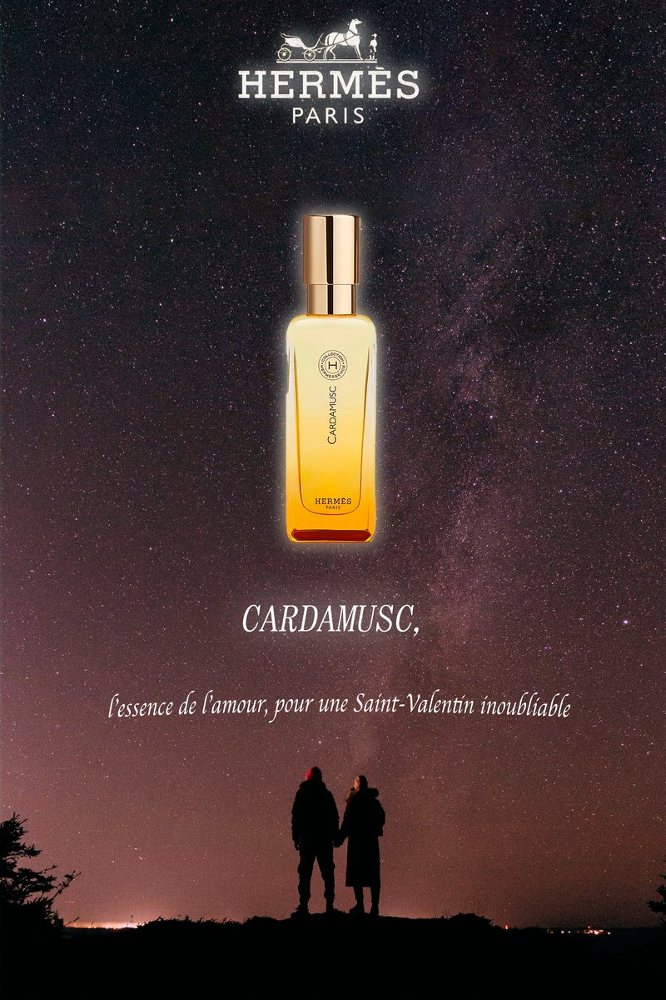
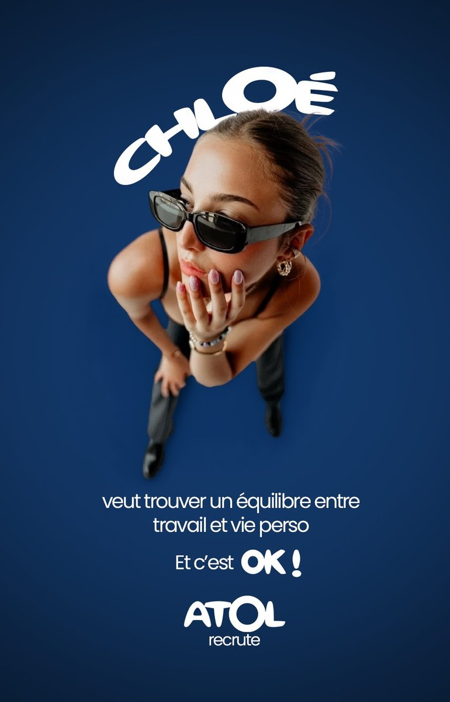
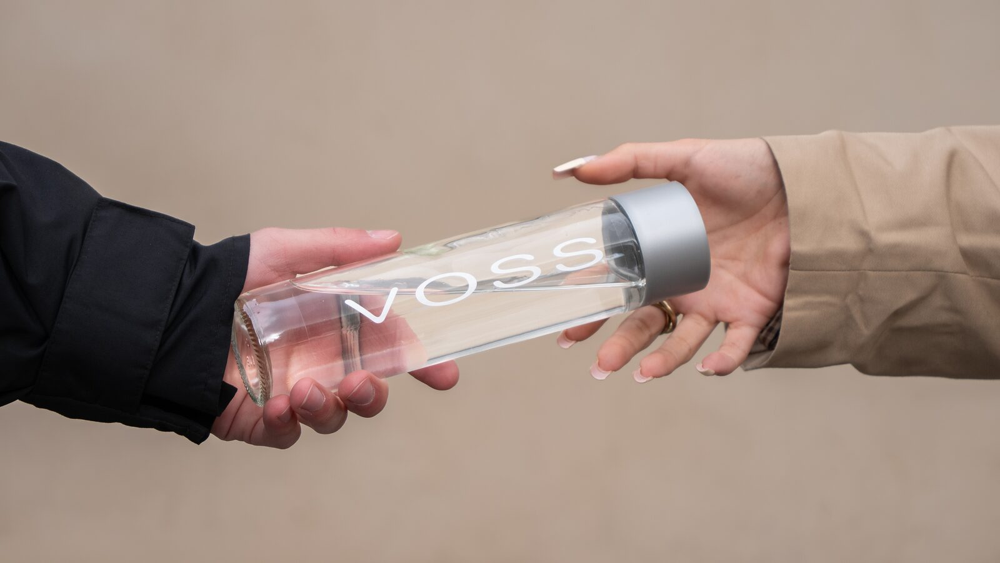

A
Rideau rouge
Un aplat rouge balaie chaque image et la découvre en se retirant. Les titres montent ligne par ligne depuis un masque. Style agence, net et rapide.
Mesprojets



Même contenu, mêmes images, quatre comportements très différents. Descends jusqu'en bas, puis dis-moi simplement la lettre que tu préfères : A, B, C ou D. Tu peux aussi en combiner deux (« le titre de D avec la galerie de C »).
Un aplat rouge balaie chaque image et la découvre en se retirant. Les titres montent ligne par ligne depuis un masque. Style agence, net et rapide.


Pendant que tu scrolles, les colonnes ne glissent pas à la même vitesse : celle du milieu monte plus vite. Le titre recule doucement. Ça donne de la profondeur sans 3D.




La section se fige et ton scroll vertical fait défiler les projets de gauche à droite, comme une expo qu'on longe. Un temps fort, puis la page reprend normalement.

Des titres géants qui glissent dans des sens opposés au rythme de ton scroll, et des images qui s'ouvrent de l'intérieur à mesure que tu descends. Très éditorial, très affiche.


Réponds juste avec la lettre. Si rien ne te plaît, dis-moi laquelle est « la moins pire » et ce qui manque.